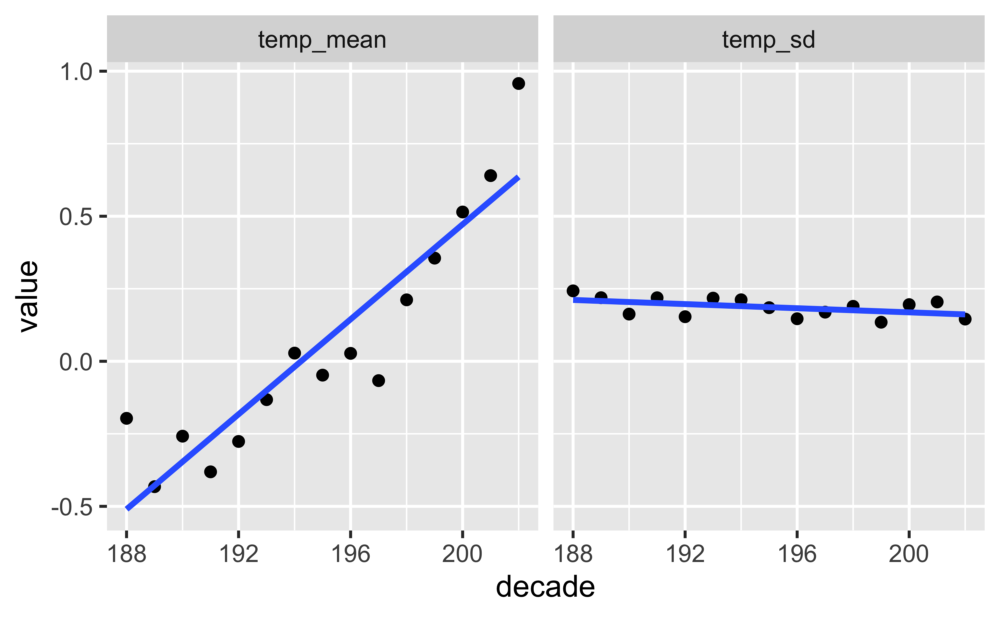
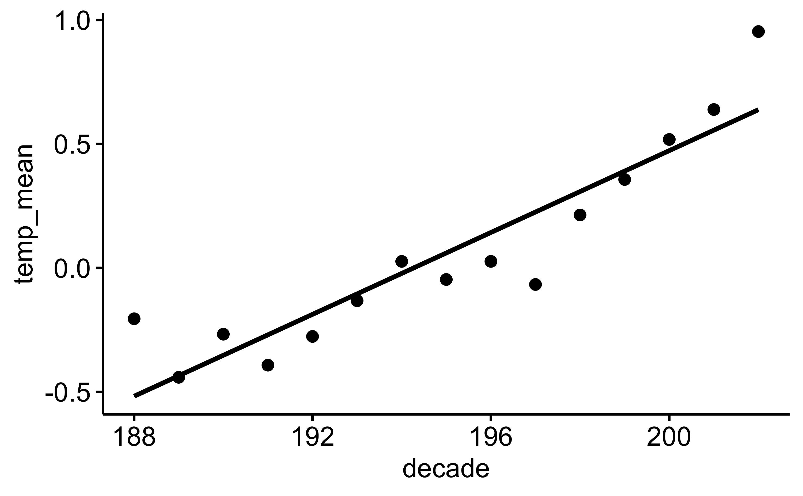
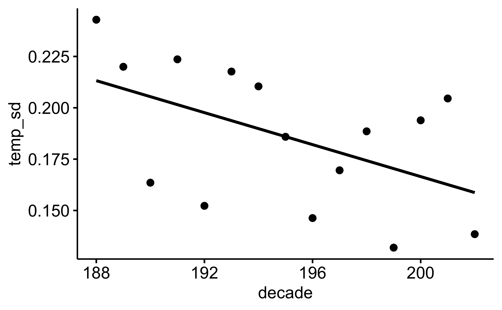

library(tidyverse)Aufgabe
Viele Quellen berichten Klimadaten unserer Erde, z.B. auch National Aeronautics and Space Administration - Goddard Institute for Space Studies.
Von dieser Quelle beziehen wir diesen Datensatz.
Die Datensatz sind auf der Webseite wie folgt beschrieben:
Tables of Global and Hemispheric Monthly Means and Zonal Annual Means
Combined Land-Surface Air and Sea-Surface Water Temperature Anomalies (Land-Ocean Temperature Index, L-OTI)
The following are plain-text files in tabular format of temperature anomalies, i.e. deviations from the corresponding 1951-1980 means.
Global-mean monthly, seasonal, and annual means, 1880-present, updated through most recent month: TXT, CSV
Starten Sie zunächst das R-Paket tidyverse falls noch nicht geschehen.
Importieren Sie dann die Daten:
data_path <- "https://data.giss.nasa.gov/gistemp/tabledata_v4/GLB.Ts+dSST.csv"
d <- read_csv(data_path, skip = 1)Wir lassen die 1. Zeile des Datensatzes aus (Argument skip), da dort Metadaten stehen, also keine Daten, sondern Informationen (Daten) zu den eigentlichen Daten.
Aufgabe
Berechnen Sie die folgende Statistiken pro Dekade:
- Mittelwert der Temperatur im Januar
- SD der Temperatur im Januar
Hinweise:
- Sie müssen zuerst die Dekade als neue Spalte berechnen.
Lösung
Dekade berechnen:
d <-
d %>%
mutate(decade = round(Year/10))Statistiken pro Dekade:
d_summarized <-
d %>%
group_by(decade) %>%
summarise(temp_mean = mean(Jan),
temp_sd = sd(Jan))
d_summarized| decade | temp_mean | temp_sd |
|---|---|---|
| 188 | −0.20 | 0.24 |
| 189 | −0.45 | 0.22 |
| 190 | −0.27 | 0.17 |
| 191 | −0.39 | 0.22 |
| 192 | −0.28 | 0.15 |
| 193 | −0.13 | 0.22 |
| 194 | 0.03 | 0.21 |
| 195 | −0.05 | 0.18 |
| 196 | 0.03 | 0.15 |
| 197 | −0.07 | 0.17 |
| 198 | 0.21 | 0.19 |
| 199 | 0.35 | 0.13 |
| 200 | 0.51 | 0.19 |
| 201 | 0.64 | 0.20 |
| 202 | 0.95 | 0.14 |
Zur Veranschaulichung visualisieren wir die Ergebnisse:

Alternativ können Sie zum Visualisieren der Daten z.B. das Paket ggpubr nutzen:
library(ggpubr)
ggscatter(d_summarized, x = "decade", y = "temp_mean", add = "reg.line")
ggscatter(d_summarized, x = "decade", y = "temp_sd", add = "reg.line")

Falls Sie Teile der R-Syntax nicht kennen: Machen Sie sich nichts daraus. 😄
Categories:
- data
- eda
- lagemaßee
- variability
- string